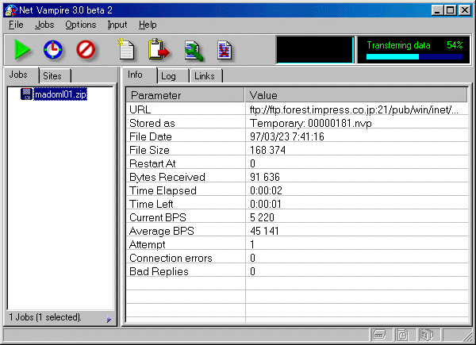
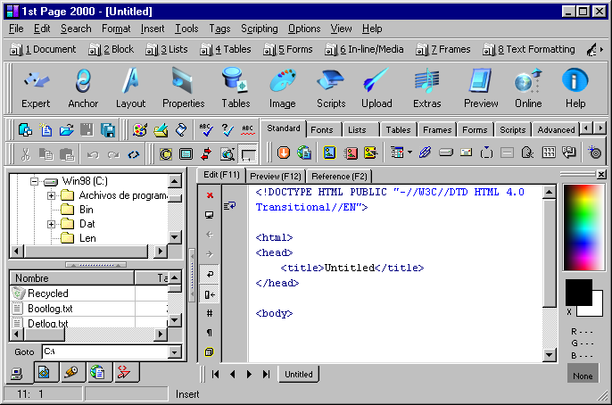
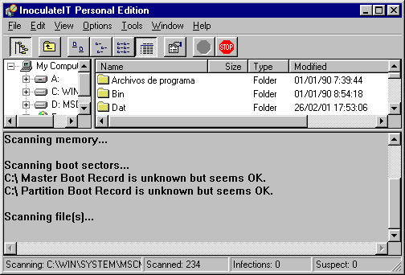

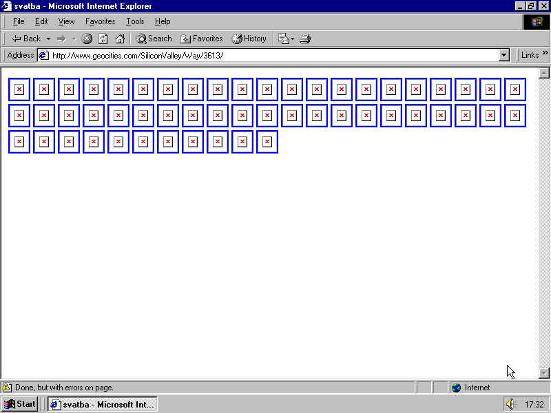
original url http://www.geocities.com/SiliconValley/Way/3613/
last modified 1999-09-24 17:55:17
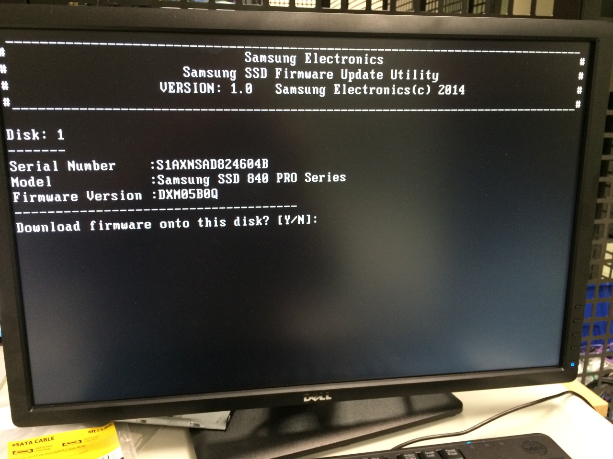

how artists organize their files
Apparently I’m an artist
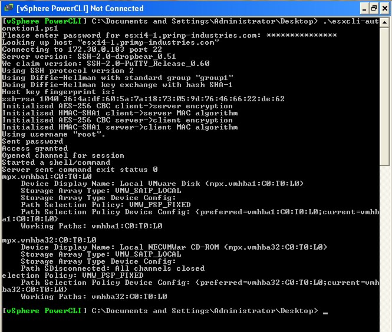
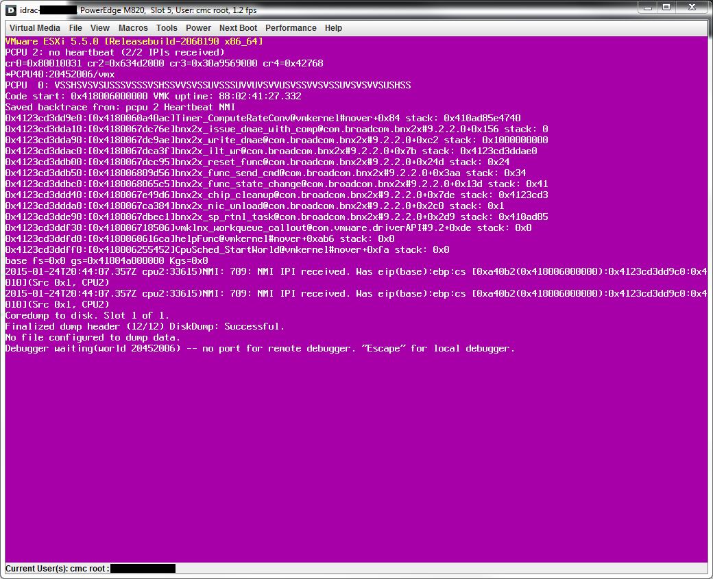
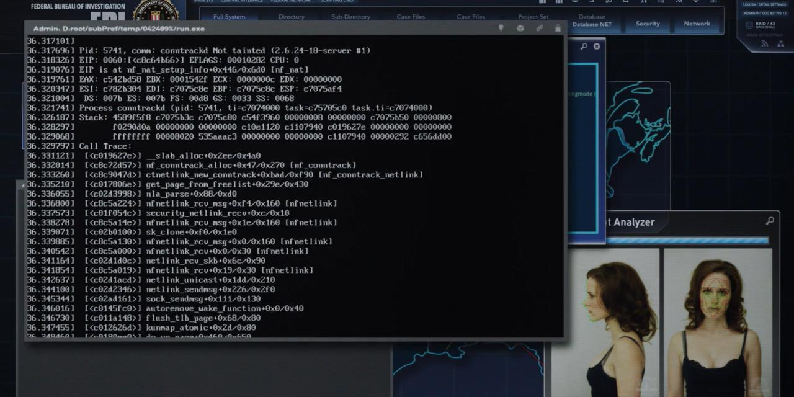
House of cards S03E04
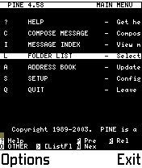
You know what, fuck this screen
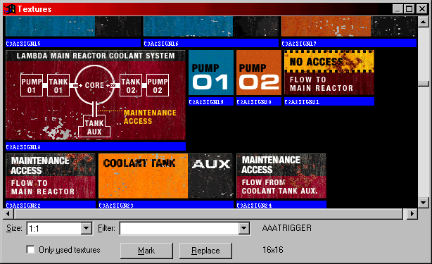
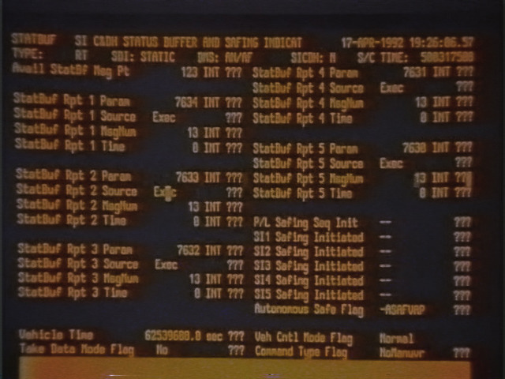
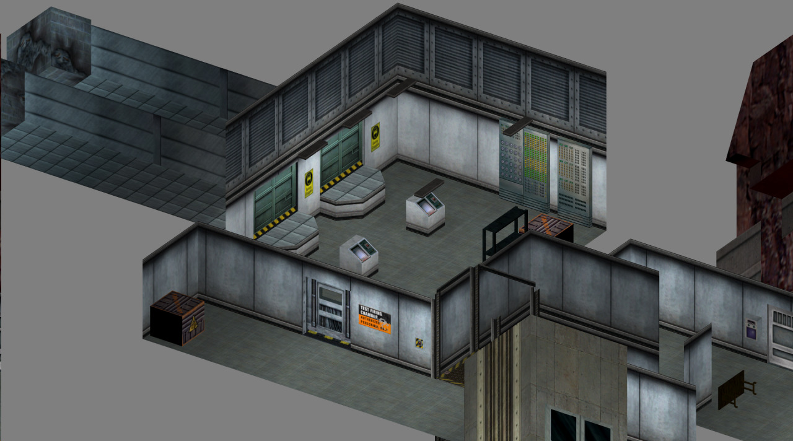
Lambda Core from Half-Life by Valve
Isometric view created with HalfMapper, https://github.com/gzalo/HalfMapper
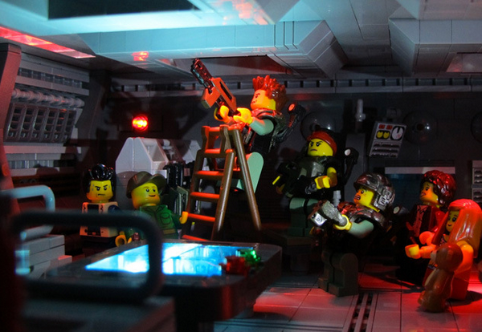
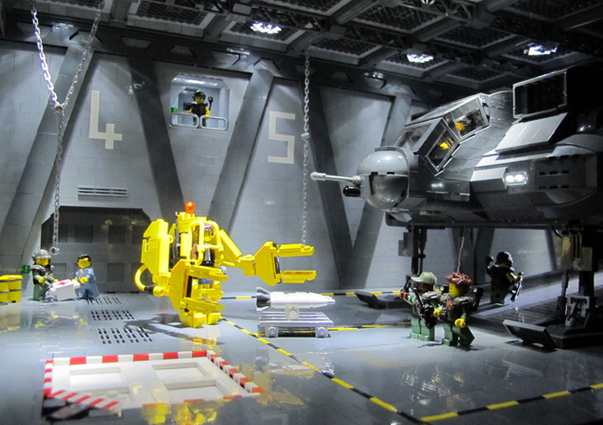
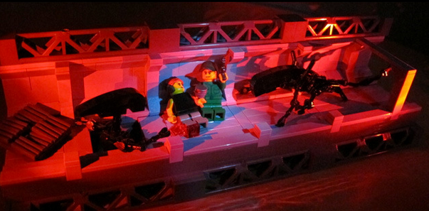
Aliens, in LEGO
Via Imgur
S79-29067 (15 March 1979) — An interior view of the space shuttle mission simulator (SMS), featuring the area between the commander and pilot positions which houses displays and controls. The cathode ray tube (CRT) computer displays are at top; a portion of the computer keyboards for the commander and pilot can be seen at bottom center. This SMS motion base simulator is located in the mission simulation and training facility at NASA’s Johnson Space Center (JSC).
Photo credit: NASA
S79-30442 (29 March 1979) — Granvil A. (Al) Pennington studies the monitor on his console – the instrumentation/ communications officer (INCO) position – during simulations in the mission operations control room of the mission control center. The simulations are in preparation for STS-1, the first of a series of orbital fight test (OFT) in the space shuttle orbiter 102 Columbia.
Photo credit: NASA